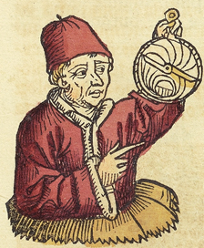

This manuscript contains material that has been linked to two printings of the Calendarium by the astronomer Regiomontanus: the Nuremberg edition of 1474 (62r-74v), including the time-telling instruments on this folio, and the Venice edition of 1478 (97r-122r).
Regiomontanus (aka Johannes Müller von Königsberg, 1436-1476) was a widely renowned scholar who authored a large number of works on arithmetic, trigonometry, and astronomy. After moving to Nuremberg in 1472, he founded the first scientific printing press in Europe, and produced the first printed astronomical textbook, Georg von Peuerbach’s Theoricae novae Planetarum. First published in 1474, his Calendarium includes information on lunar and solar eclipses, variations in day length, and the zodiac and planets for 1475-1530. It was reprinted in 1476 by the innovative German printer Erhard Ratdolt, who included coloured eclipse diagrams and the first decorative title page known to have been printed in Europe. Regiomontanus appears in Hartmann Schedel’s 1493 Nuremberg Chronicle holding an astrolabe, as seen in this image from folio 255r.